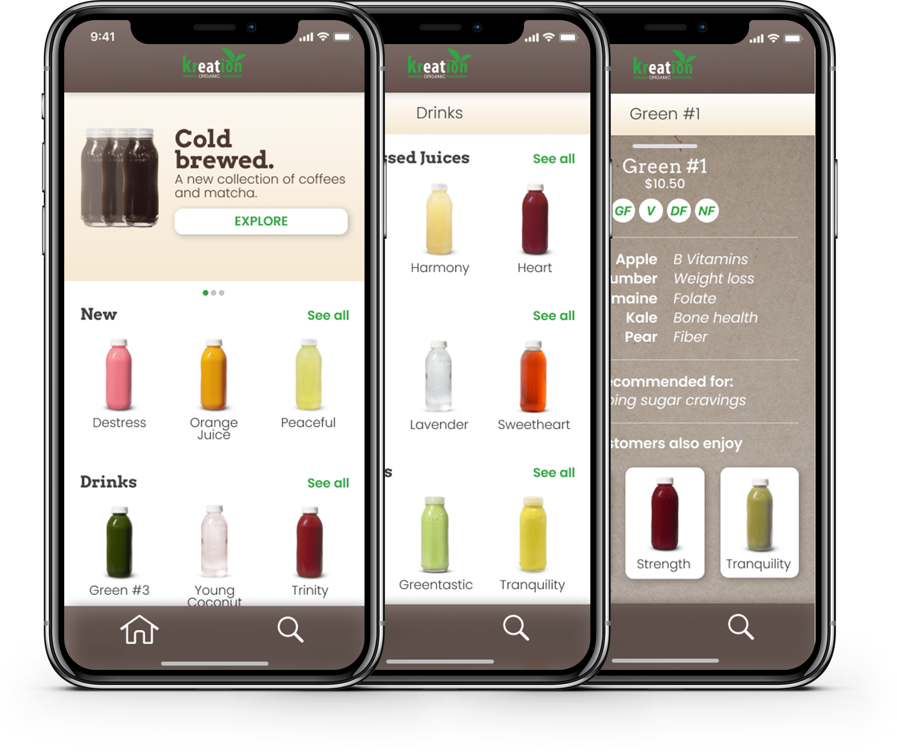
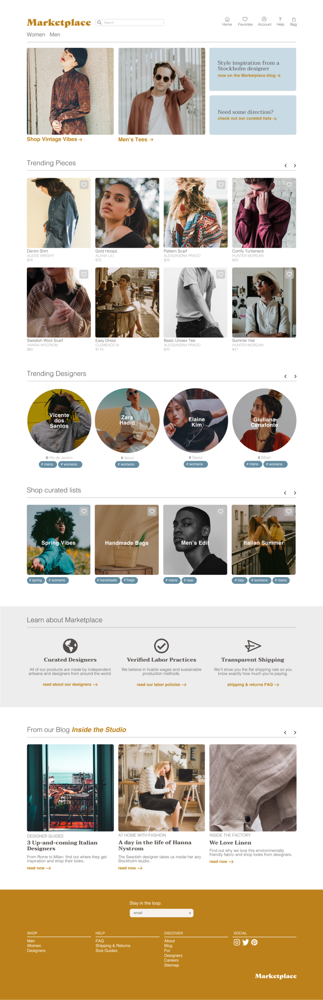
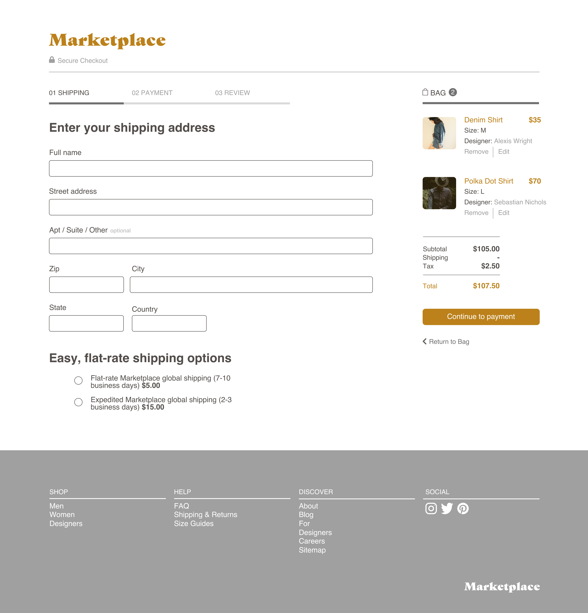

The digital experience for an LA staple.
Kreation came to me with the unique challenge of translating their existing brand style to a mobile app. Explore the case study to learn more about this exciting project.
- UX Design
- Visual Design
- Branding & Identity

Roles
- Competitive Analysis
- User Flows
- User Stories
- Wireframes
- High Fidelity Mockups

Deliverables
- Figma
- Sketch
- InVision
- Adobe Photoshop
- Adobe Illustrator

Tools
Overview
Marketplace is a curated online collection of independent fashion designers. As consumers become more aware of the environmental and humanitarian costs of fast fashion, they're becoming increasingly interested in local and/or sustainable clothing.
Problem
Clothing production requires a huge amount of resources and chemicals. The current demand for low-cost and low-quality clothing comes at the expense of factory workers, cotton farmers, and the environment. These are just a few of the ways the apparel industry is damaging:
- Chemicals used to grow cotton in developing countries end up polluting local water supplies and are cancerous to the farmers who come into contact with them daily.
- Clothing made abroad means a larger carbon footprint when these clothes are shipped overseas to their markets.
- Low-quality clothing that is meant to deteriorate creates a wasteful (and profitable) cycle of buying and disposing.
Solution
Marketplace connects consumers to independent designers that they wouldn't discover in major online retailers. Shoppers can save their favorite pieces and designers to get updates when new items become available.

Crafting a uniform voice.
I had an initial feeling in my mind of what I wanted the brand to feel like, but needed to dig deeper and turn that feeling into a cohesive design system. I knew I wanted the brand to be artisanal, authentic, and warm.

User Stories
What are the goals of the platform?
After creating the personas and using the data from the survey, I was able to create the user stories. I organized these by role, task, and value, and then sorted them according to their priority level. For the MVP I decided to focus on account creation, document creation, document organization, and file uploading. This decision was based on user data that pointed to user’s most necessary features. Here is a snapshot of the high-priority stories for the "user" role:
| I want to... | so that I can... |
|---|---|
| filter clothing based on size | narrow down which options are available to me. |
| search for clothing based on gender and clothing category | quickly find what I'm looking for. |
| save items in different lists | get inspiration for new looks and buy my favorite items later. |
| see a designer detail page | learn more about the designer and see where they're from. |
| create an account | save my interests and credit card information. |
| see shipping costs up front | not be surprised at the shipping cost when I go to checkout. |
| see suggested items based on the item I'm looking at | find more clothing that matches my style. |
| see a customized landing page when I return to the site | have a tailored shopping experience. |
User Flows
Visualizing the user journey.
Next I created user flows for various tasks within the product: user onboarding, document creation, document organization, etc. While creating the flows, I looked at the flows of competitors I had analyzed and worked to make things as clear as possible for the user.
Going into product detail:

Paper Prototypes
Quick design testing.
At this stage in the prototype, I wanted to use methods that would allow me to dispose of early ideas by testing them with users with paper prototypes. Through the paper prototyping process, I was able to gather key insights that would guide the rest of my product development. These key takeaways were:
- Users were less interested in location-based search than I expected, and I decided it would be best to stick to a traditional e-commerce model.
- Search and filtering, especially by size, is a top priority among users.


User Testing
Testing high-level user flows
I used high-fidelity design mockups to test high-level user flows:
- Searching for an item
- Checking out
- Navigating the landing page
Visual Design
High-Fidelity Mockups and Further Testing
At this stage I was ready to apply my branding work to the wireframes. I mocked up my fist iteration of the visual designs and had this review by multiple UX professionals. Based on that feedback, I made some changes to the visual design in order to arrive at the final product.
Streamlining Checkout
Adding More CTAs
Final Product
Putting it all together
The final Marketplace product is a culmination of user research, testing, and visual design. After multiple iterations, I created an MVP product that solves the initial problem: connect consumers to independent, ethical, and sustainable fashion in a single location.
Landing Page
Checkout
Search and Filtering

Conclusion
Wrapping it all up.
What did I learn?
The process of designing Marketplace was both rewarding and challenging. I had the opportunity to build a platform that I believe could truly make a difference in the world, all while learning more about how different retailers craft their digital experiences. So, after all of this, what were my main takeaways?